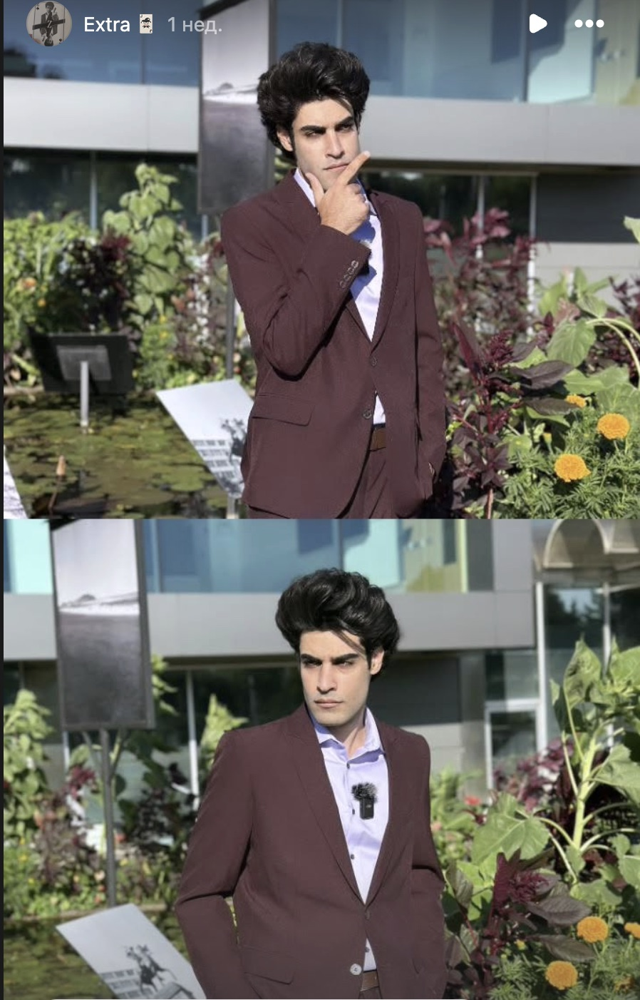

Personal Brand ContentMustafa Zebuun Mayoral Campaign
Visual and production work for Mustafa Zebuun’s mayoral campaign in London, Ontario. Political topics and messaging are determined by the candidate himself.
View case studyVideo Content Producer · Personal Brand Content
London, Ontario–based content producer creating visual content for public figures, professionals and local businesses — combining concept refinement, location planning, filming, editing and final visual details.

Selected Work
Personal Brand Content, Local Business Storytelling and long-form films.

Personal Brand ContentVisual and production work for Mustafa Zebuun’s mayoral campaign in London, Ontario. Political topics and messaging are determined by the candidate himself.
View case study Local Business Storytelling
Local Business Storytelling
A Local Business Storytelling series presenting London businesses and places through short-form social video.
View case study Long-Form Storytelling
Long-Form Storytelling
Personal long-form projects built around research, scripting, historical context and visual storytelling.
View case studyAbout
I’m a Video Content Producer and Interactive Media Design graduate based in London, Ontario. I create Personal Brand Content, Local Business Storytelling and long-form city films — using visual communication to shape how people, businesses and places are seen.
From the first idea to the finished video. I combine planning, filming and post-production in one workflow — refining concepts and scripts, selecting locations, organizing shoots, filming, editing complete videos, and adding subtitles, music, graphics and on-screen text.
Ontario College Diploma · Interactive Media Design
Contact
Ready to tell yours?